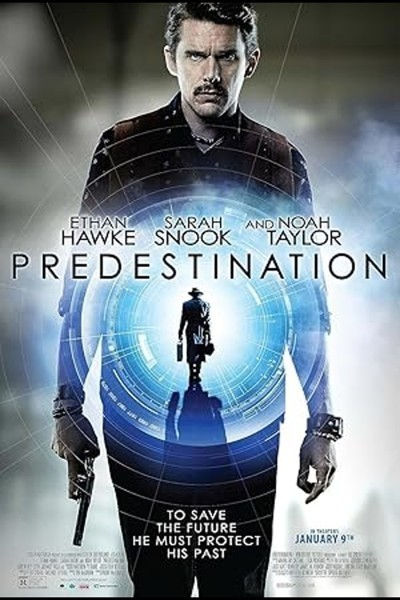
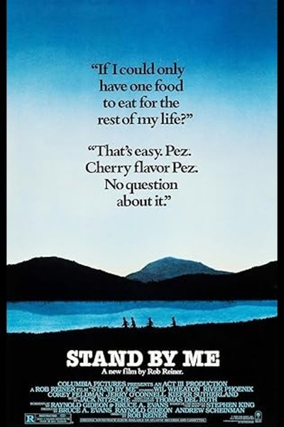
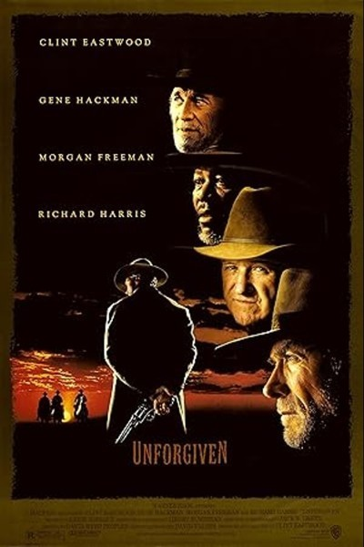

10 Things I Hate About You
Uma comédia romântica colegial que reimagina Shakespeare em um ambiente moderno. A história acompanha adolescentes lidando com amor, rebeldia e autoafirmação.

2001: A Space Odyssey
Uma jornada visualmente impressionante que explora temas de evolução, inteligência artificial e a vastidão do espaço. Um marco da ficção científica..

The Assassination of Jesse James by the Coward Robert Ford
Um jovem admira e se aproxima do famoso fora-da-lei Jesse James, mas suas intenções escondem algo mais. Um faroeste lento e profundo sobre fama e traição.
The Aviator
A trajetória conturbada do famoso magnata da aviação Howard Hughes, mostrando sua genialidade, obsessões e a pressão da fama.
Awakenings
Baseado em fatos reais, um médico ajuda pacientes catatônicos a despertarem usando um novo tratamento. Uma história comovente de esperança. ---Legenda Na Pasta---

Baby Driver
Coerced into working for a crime boss, a young getaway driver must face the music when a doomed heist threatens his life, love, and freedom.

Babylon
A tale of outsized ambition and outrageous excess, it traces the rise and fall of multiple characters during an era of unbridled decadence and depravity in early Hollywood.

Beautiful Boy
A family coping with addiction over many years goes through the heartbreaking and inspiring experience of survival, relapse and recovery.

Before Sunrise
A young man and woman meet on a train in Europe, and wind up spending one evening together in Vienna. Unfortunately, both know that this will probably be their only night together.
Before Sunset
Nine years after Jesse and Celine first met, they encounter each other again on the French leg of Jesse's book tour.

BlacKkKlansman
Ron Stallworth, an African American police officer from Colorado Springs, Colorado, successfully infiltrates the local Ku Klux Klan branch aided by a Jewish surrogate who eventually becomes its leader. Based on actual events.
Blade Runner
A blade runner must pursue and terminate four replicants who stole a ship in space and have returned to Earth to find their creator.
Blow
The story of how George Jung, along with the Medellín Cartel headed by Pablo Escobar, established the American cocaine market in the 1970s in the United States.
Blue Valentine
The relationship of a contemporary married couple, charting their evolution over a span of years by cross-cutting between time periods.

Braveheart
Scottish warrior William Wallace leads his countrymen in a rebellion to free his homeland from the tyranny of King Edward I of England.

The Brutalist
A visionary architect flees post-war Europe in 1947 for a brighter future in the United States and finds his life forever changed by a wealthy client.

Caché
A married couple is terrorized by a series of surveillance videotapes left on their front porch.

Casino
In Las Vegas, two best friends--a casino executive and a Mafia enforcer--compete for a gambling empire and a fast-living, fast-loving socialite.
Come and See
After finding an old rifle, a young boy joins the Soviet resistance movement against ruthless German forces and experiences the horrors of World War II.

Dallas Buyers Club
In 1985 Dallas, electrician and hustler Ron Woodroof works around the system to help AIDS patients get the medication they need after he is diagnosed with the disease.

The Dark Knight
When a menace known as the Joker wreaks havoc and chaos on the people of Gotham, Batman, James Gordon and Harvey Dent must work together to put an end to the madness.
The Deer Hunter
An in-depth examination of the ways in which the Vietnam War impacts and disrupts the lives of several friends in a small steel mill town in Pennsylvania.

Donnie Brasco
An FBI undercover agent infiltrates the mob and finds himself identifying more with the Mafia life--at the expense of his regular one.
Donnie Darko
After narrowly escaping a bizarre accident, a troubled teenager is plagued by visions of a man in a large rabbit suit who manipulates him to commit a series of crimes.
Elite Squad
In 1997 Rio de Janeiro, Captain Nascimento has to find a substitute for his position while trying to take down drug dealers and criminals before the Pope visits.

Elite Squad
Depois de um motim, o ex-capitão Nascimento, agora um alto oficial do Rio de Janeiro, se vê envolvido numa disputa política entre o governo e os paramilitares.

Empire of the Sun
A young English boy struggles to survive under Japanese occupation of China during World War II.

Everything Everywhere All at Once
A middle-aged Chinese immigrant is swept up into an insane adventure in which she alone can save existence by exploring other universes and connecting with the lives she could have led.

Eyes Wide Shut
A Manhattan doctor embarks on a bizarre, night-long odyssey after his wife's admission of unfulfilled longing.

Fargo
Minnesota car salesman Jerry Lundegaard's inept crime falls apart due to his and his henchmen's bungling and the persistent police work of the quite pregnant Marge Gunderson.

A Few Good Men
A military lawyer intends to prove that two US Marines charged with murdering a fellow Marine were only following their base commander's orders.

The Florida Project
A single mother and the manager of a roadside motel do their utmost to maintain the innocence of a six-year-old girl's life.
Flow
Cat is a solitary animal, but as its home is devastated by a great flood, he finds refuge on a boat populated by various species, and will have to team up with them despite their differences.

Full Metal Jacket
A pragmatic U.S. Marine observes the dehumanizing effects the Vietnam War has on his fellow recruits from their brutal boot camp training to the bloody street fighting in Hue.

The Gentlemen
An American expat tries to sell off his highly profitable marijuana empire in London, triggering plots, schemes, bribery and blackmail in an attempt to steal his domain out from under him.

The Girl with the Dragon Tattoo
Journalist Mikael Blomkvist is aided in his search for a woman who has been missing for 40 years by hacker Lisbeth Salander.

The Good, the Bad and the Ugly
A bounty-hunting scam joins two men in an uneasy alliance against a third in a race to find a fortune in gold buried in a remote cemetery.
Gran Torino
After a Hmong teenager tries to steal his prized 1972 Gran Torino, a disgruntled, prejudiced Korean War veteran seeks to redeem both the boy and himself.
Groundhog Day
A narcissistic, self-centered weatherman finds himself in a time loop on Groundhog Day.

The Handmaiden
In 1930s Korea, a girl is hired as a handmaiden to a Japanese heiress who lives a secluded life on a countryside estate. But the maid has a secret: She is a pickpocket recruited by a swindler to help seduce the Lady and steal her ...
The Hateful Eight
In the dead of a Wyoming winter, a bounty hunter and his prisoner find shelter in a cabin currently inhabited by a collection of nefarious characters.

The Hunt
A teacher lives a lonely life, all the while struggling over his son's custody. His life slowly gets better brutally shattered by an innocent li...

Killing Them Softly
Jackie Cogan is an enforcer hired to restore order after three dumb guys rob a Mob protected card game, causing the local criminal economy to collapse.
Life Is Beautiful
When an open-minded Jewish waiter and his son become victims of the Holocaust, he uses a perfect mixture of will, humor and imagination to protect his son from the dangers around their camp.

Love And Other Drugs
Uma jovem que sofre de Parkinson faz amizade com um traficante de drogas que trabalha para a Pfizer nos anos 90 em Pittsburgh..

The Lord of the Rings: The Fellowship of the Ring
A meek Hobbit from the Shire and eight companions set out on a journey to destroy the powerful One Ring and save Middle-earth from the Dark Lord Sauron.

The Lord of the Rings: The Two Towers
While Frodo and Sam edge closer to Mordor with the help of the shifty Gollum, the divided fellowship makes a stand against Sauron's new ally, Saruman, and his hordes of Isengard.

The Lord of the Rings: The Return of the King
Gandalf and Aragorn lead the World of Men against Sauron's army to draw his gaze from Frodo and Sam as they approach Mount Doom with the One Ring.

Lord of War
An arms dealer confronts the morality of his work as he is being chased by an INTERPOL Agent.

Mad Max: Fury Road
In a post-apocalyptic wasteland, a woman rebels against a tyrannical ruler in search for her homeland with the aid of a group of female prisoners, a psychotic worshipper and a drifter named Max.
Magnolia
An epic mosaic of interrelated characters in search of love, forgiveness and meaning in the San Fernando Valley.

Midnight in Paris
While on a trip to Paris with his fiancée's family, a nostalgic screenwriter finds himself mysteriously going back to the 1920s every day at midnight.

Monty Python and the Holy Grail
King Arthur and his Knights of the Round Table embark on a surreal, low-budget search for the Holy Grail, encountering many, very silly obstacles.

Mulholland Drive
After a car wreck on Mulholland Drive renders a woman amnesiac, she and a Hollywood-hopeful search for clues and answers across Los Angeles in a twisting venture beyond dreams and reality.

New Jack City
A crime lord ascends to power and becomes megalomaniacal while a maverick police detective vows to stop him.
Notting Hill
A set of circumstances makes Anna Scott, a famous actress, fall in love with William Thacker, owner of a bookstore in Notting Hill. But the paparazzi's fascination with her complicates their bond.

Oldboy
After being kidnapped and imprisoned for fifteen years, Oh Dae-Su is released, only to find that he must track down his captor in five days.

Once Upon a Time in America
A former Prohibition-era Jewish gangster returns to the Lower East Side of Manhattan 35 years later, where he must once again confront the ghosts and regrets of his old life.

Paris, Texas
Travis Henderson, an aimless drifter who has been missing for four years, wanders out of the desert and must reconnect with society, himself, his life, and his family.
The Pianist
During WWII, acclaimed Polish musician Wladyslaw faces various struggles as he loses contact with his family. As the situation worsens, he hides in the ruins of Warsaw in order to survive.
Portrait of a Lady on Fire
On an isolated island in Brittany at the end of the eighteenth century, a female painter is obliged to paint a wedding portrait of a young woman.

Predestination
As his last assignment, a temporal agent is tasked to travel back in time and prevent a bomb attack in New York in 1975. The hunt, however, turns out to be beyond the bounds of possibility.
The Princess Bride
A bedridden boy's grandfather reads him the story of a farmboy-turned-pirate who encounters numerous obstacles, enemies and allies in his quest to be reunited with his true love.
The Proposal
When New York editor Margaret faces deportation, she convinces her assistant Andrew to marry her in return for a promotion. However, when she visits his hometown, it changes her in many ways.
Public Enemies
The Feds try to take down notorious American gangsters John Dillinger, Baby Face Nels

Pulp Fiction
The lives of two mob hitmen, a boxer, a gangster and his wife, and a pair of diner bandits intertwine in four tales of violence and redemption.

Rain Man
After a selfish L.A. yuppie learns his estranged father left a fortune to an autistic-savant brother in Ohio that he didn't know existed, he absconds with his brother and sets out across the country, hoping to gain a larger inheri...

Reservoir Dogs
When a simple jewelry heist goes horribly wrong, the surviving criminals begin to suspect that one of them is a police informant.

Saving Private Ryan
Following the Normandy Landings, a group of U.S. soldiers go behind enemy lines to retrieve a paratrooper whose brothers have been killed in action.

Schindler's List
In German-occupied Poland during World War II, industrialist Oskar Schindler gradually becomes concerned for his Jewish workforce after witnessing their persecution by the Nazis.
The Shining
A family heads to an isolated hotel for the winter, where a sinister presence influences the father into violence. At the same time, his psychic son sees horrifying forebodings from both the past and the future.

Snatch
Unscrupulous boxing promoters, violent bookmakers, a Russian gangster, incompetent amateur robbers and supposedly Jewish jewelers fight to track down a priceless stolen diamond.

Society of the Snow
The flight of a rugby team crashes on a glacier in the Andes. The few passengers who survive the crash find themselves in one of the world's toughest environments to survive.

Spotlight
The true story of how the Boston Globe uncovered the massive scandal of child molestation and cover-up within the local Catholic Archdiocese, shaking the entire Catholic Church to its core.

Stand by Me
A writer recounts a childhood journey with his friends to find the body of a missing boy.

Terminator
A cyborg comes from the future, to kill a girl named Sarah Lee.

Terminator 2: Judgment Day
A cyborg, identical to the one who failed to kill Sarah Connor, must now protect her ten year old son John from an even more advanced and powerful cyborg.

The Boy in the Striped Pyjamas
Com a Segunda Guerra Mundial como centro, a história é contada através dos olhos do Bruno, o filho de um comandante de um campo de concentração, sobre sua amizade com um menino judeu..
The Thing
A research team in Antarctica is hunted by a shape-shifting alien that assumes the appearance of its victims.

Titanic
A seventeen-year-old aristocrat falls in love with a kind but poor artist aboard the luxurious, ill-fated R.M.S. Titanic.

Trainspotting
Renton, deeply immersed in the Edinburgh drug scene, tries to clean up and get out despite the allure of drugs and the influence of friends.
True Grit
A stubborn teenager enlists the help of a tough U.S. Marshal to track down her father's murderer.
Uncut Gems
With his debts mounting and angry collectors closing in, a fast-talking New York City jeweler risks everything in hope of staying afloat and alive.

Unforgiven
Retired Old West gunslinger Will Munny reluctantly takes on one last job to avenge an injustice with the help of his old partner and a newer outlaw known simply as The Schofield Kid.

The Untouchables
During Prohibition, Treasury agent Eliot Ness sets out to stop ruthless Chicago gangster Al Capone, and assembles a small, incorruptible team to help him.
The Usual Suspects
The sole survivor of a pier shoot-out tells the story of how a notorious criminal influenced the events that began with five criminals meeting in a seemingly random police lineup.

The Whale
A reclusive, morbidly obese English teacher attempts to reconnect with his estranged teenage daughter.
You Were Never Really Here
A traumatized veteran unafraid of violence tracks down missing girls for a living. When a job spins out of control, Joe's nightmares overtake him as a conspiracy is uncovered leading to what could be his death trip or his awakening.

Zodiac
Between 1968 and 1983, a San Francisco cartoonist becomes an amateur detective obsessed with tracking down the Zodiac Killer, an unidentified individual who terrorizes Northern California with a killing spree.

The Zone of Interest
Auschwitz commandant Rudolf Höss and his wife Hedwig strive to build a dream life for their family in a house and garden beside the camp.